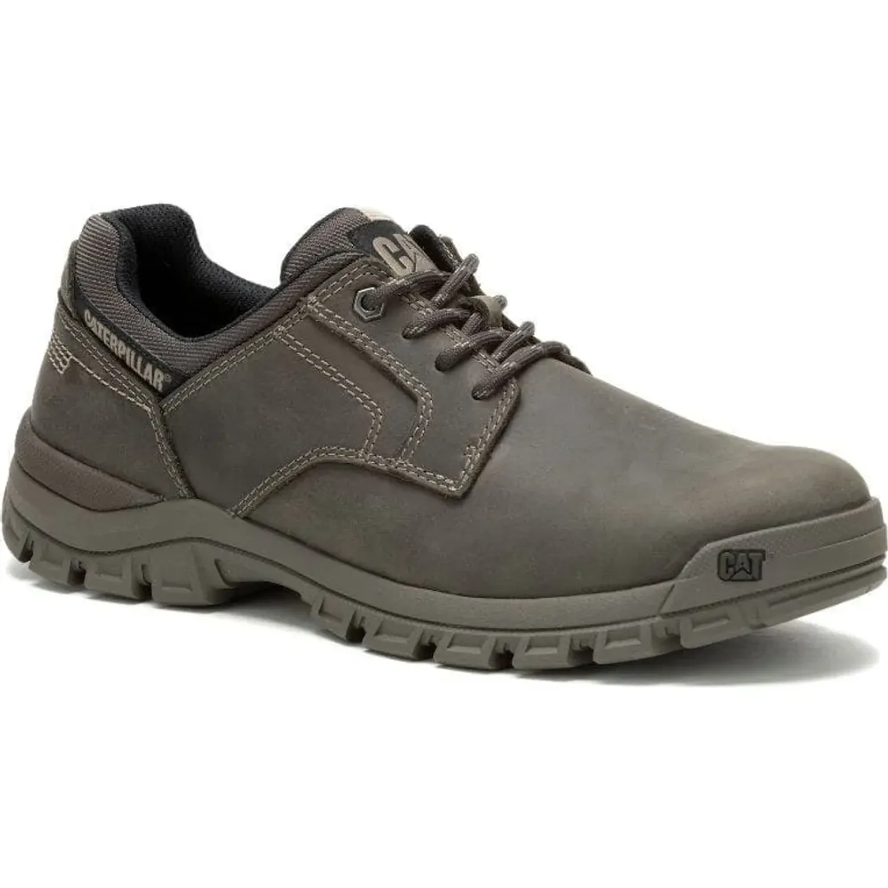

Caterpillar originales para hombre
Coleccion CAT Threshold
Threshold Low gris con 30% por tiempo limitado hasta terminar stock. Tallas en oferta: 40.5 y 42.

Threshold Low gris con 30% hasta terminar stock. Los demas modelos mantienen 10% de descuento.
Solo color gris
CAT Threshold Low gris a S/279
Precio de lista S/399. Oferta 30% por tiempo limitado hasta terminar stock. Tallas disponibles para esta oferta: 40.5 y 42.
Catalogo completo
Modelos Threshold
Low, Chukka, Chelsea y Hiker con fotos reales, precios especiales y consulta directa por WhatsApp.
No encontre productos con esos filtros.
Pedidos
Proximamente nuevos modelos
Si estas en Cusco, tu pedido estara listo en 24 horas previa confirmacion por WhatsApp. Para otros colores, tallas o nuevos modelos, coordinamos disponibilidad antes de separar.
Pagos
Medios de pago
Consulta por WhatsApp para realizar el pago y confirmar tu pedido.
Guia referencial
Tallas Caterpillar para hombre
Las tallas disponibles aparecen en cada modelo. Usa esta tabla solo como referencia de conversion Caterpillar.
| EU | US hombre | UK | Pie aprox. |
|---|---|---|---|
| 37 | 4 | 3 | 22 cm |
| 37.5 | 4.5 | 3.5 | 22.5 cm |
| 38 | 5 | 4 | 23 cm |
| 38.5 | 5.5 | 4.5 | 23.5 cm |
| 39 | 6 | 5 | 24 cm |
| 39.5 | 6.5 | 5.5 | 24.5 cm |
| 40 | 7 | 6 | 25 cm |
| 40.5 | 7.5 | 6.5 | 25.5 cm |
| 41 | 8 | 7 | 26 cm |
| 41.5 | 8.5 | 7.5 | 26.5 cm |
| 42 | 9 | 8 | 27 cm |
| 42.5 | 9.5 | 8.5 | 27.5 cm |
| 43 | 10 | 9 | 28 cm |
| 43.5 | 10.5 | 9.5 | 28.5 cm |
| 44 | 11 | 10 | 29 cm |
| 44.5 | 11.5 | 10.5 | 29.5 cm |
| 45 | 12 | 11 | 30 cm |
| 46 | 13 | 12 | 31 cm |
| 47 | 14 | 13 | 32 cm |
Cusco
Ven a verlos o coordina tu pedido
Av. Collasuyo, altura del paradero 1 de Mayo, Cusco. Atencion por las mananas, normalmente hasta la 1:00 p. m. Domingos con previa coordinacion.